Este manual explica, passo a passo e em linguagem direta, como usar o sistema no dia a dia da controladoria: enviar e acompanhar demandas às secretarias, fazer a autoavaliação do controle interno, montar planos de ação, conduzir auditorias, tratar situações de risco, emitir relatórios e acompanhar os indicadores fiscais do município.
O mínimo para entrar no sistema, entender a tela inicial e deixar a controladoria pronta para trabalhar.
Cada município tem um endereço próprio de acesso, no formato endereço-do-sistema/m/nome-do-municipio (por exemplo, /m/catolandia-ba). Esse link é fornecido pela HorizonAJ na implantação. A página mostra o nome do município e as entidades atendidas (Prefeitura, Câmara, autarquias). Salve-o nos favoritos do navegador.
Depois de várias tentativas com senha errada, o sistema mostra “Muitas tentativas. Aguarde alguns minutos e tente novamente.” Espere antes de tentar de novo. Se esqueceu a senha, veja o capítulo 16.
O Painel é a sua tela inicial. Em uma olhada você vê o que precisa de atenção: Demandas em aberto, Demandas vencidas, Respostas a analisar e Ações em execução, além da aderência às normas e das movimentações recentes. O capítulo 3 explica cada quadro.
O sistema funciona melhor quando a estrutura básica é montada antes do trabalho do dia a dia. Siga esta ordem na primeira semana:
| # | O que fazer | Onde e por quê |
|---|---|---|
| 1 | Conferir seus dados | Menu do usuário (círculo com suas iniciais, no canto superior direito) → Configurações. Confira nome, cargo e troque a senha inicial. |
| 2 | Cadastrar as unidades | Gestão → Unidades. Cadastre secretarias, departamentos e setores com o responsável e o e-mail. Sem unidades não é possível enviar demandas (capítulo 4). |
| 3 | Pedir os acessos das unidades | Solicite à HorizonAJ a criação dos usuários de cada secretaria (perfil “Acesso restrito”), informando nome, e-mail, cargo e unidade. Cada um só verá as demandas da própria unidade. |
| 4 | Abrir o ciclo de autoavaliação | Conformidade → Autoavaliação → Abrir ciclo. Escolha a OT 05/2024 e/ou a Res. TCM-BA 1.120/2005 (capítulo 7). |
| 5 | Enviar a primeira demanda | Atuação → Demandas → Nova demanda. Peça um documento a uma secretaria com prazo (capítulo 5). |
| 6 | Montar o PAAI | Atuação → Auditorias → Plano anual (PAAI). Inclua as auditorias do ano e aprove (capítulo 9). |
| 7 | Atualizar os dados externos | Painel → Dados externos → Atualizar dados. Traz população, receita, despesa com pessoal e entregas ao SICONFI (capítulo 13). |
Tudo o que você faz fica registrado com data, hora e autor na Trilha de auditoria. Isso dá segurança para trabalhar: nada some e tudo pode ser comprovado depois.
Cinco ideias que explicam como o sistema está organizado e por que cada pessoa vê telas diferentes.
Entidade é o órgão que você controla: Prefeitura, Câmara Municipal, autarquia, fundação, consórcio ou empresa pública. O município agrupa as entidades de uma mesma cidade e define o link de acesso /m/....
Cada entidade só vê os próprios dados. As demandas, planos, auditorias e documentos da Prefeitura não aparecem para a Câmara, e vice-versa, mesmo que as duas usem o mesmo link de acesso. Se você controla duas entidades, troca de uma para outra pelo botão com o nome da entidade no topo da tela (capítulo 3).
Unidade é uma parte da estrutura da entidade: secretaria, departamento, divisão ou setor (por exemplo, Secretaria Municipal de Saúde ou Departamento de Contabilidade). As unidades são usadas para três coisas:
Cada pessoa tem um perfil em cada entidade. O perfil é definido pela administração HorizonAJ no momento do cadastro.
| Perfil | Quem costuma ser | O que vê e faz |
|---|---|---|
| Controlador | Controlador(a)-geral ou controlador(a) interno(a) | Vê todos os módulos da entidade e tem as decisões finais: cadastrar unidades, concluir ciclos de autoavaliação, validar ações, aprovar o PAAI, encerrar auditorias e medidas, atualizar dados externos e escolher a aparência. |
| Equipe de controle | Auditores, analistas e assistentes da controladoria | Vê todos os módulos e faz o trabalho operacional: envia e analisa demandas, responde a autoavaliação, registra achados, situações e ações. Não toma as decisões finais listadas acima. |
| Acesso restrito (satélite) | Servidores das secretarias e setores | Vê somente as demandas da(s) unidade(s) a que está vinculado, responde com texto e anexos e pede prorrogação. Não vê autoavaliação, auditorias, medidas, planos nem dados de outras unidades. |
| Atividade | Controlador | Equipe | Acesso restrito |
|---|---|---|---|
| Ver o Painel e todos os módulos da entidade | Sim | Sim | Não |
| Enviar, analisar, devolver, concluir e cancelar demandas; decidir prorrogações | Sim | Sim | Não |
| Responder demandas da própria unidade e pedir prorrogação | — | — | Sim |
| Cadastrar unidades | Sim | Não | Não |
| Responder requisitos da autoavaliação e gerar plano de ação | Sim | Sim | Não |
| Concluir (congelar) um ciclo de autoavaliação | Sim | Não | Não |
| Validar a conclusão de ações e mudar a situação do plano | Sim | Não | Não |
| Aprovar ou reabrir o PAAI; encerrar ou cancelar auditoria | Sim | Não | Não |
| Encerrar ou reabrir medida; ver o nome de denunciante sigiloso | Sim | Não | Não |
| Atualizar dados externos; escolher a aparência da entidade | Sim | Não | Não |
| Criar usuários e vínculos, redefinir senhas, configurar a IA | Administração HorizonAJ (peça pelo suporte) | ||
Toda movimentação — envio, resposta, devolução, edição, emissão de relatório, download de documento — vai para a trilha de auditoria, que não pode ser alterada nem excluída, nem pela HorizonAJ. Corrigir algo significa registrar um novo ato (uma edição, um comentário, uma devolução), e o histórico mostra as duas coisas.
Os módulos não são ilhas. A autoavaliação aponta lacunas, que viram ações em um plano; as ações podem ser enviadas às secretarias como demandas; a resposta aceita vira evidência do requisito. Auditorias e medidas também geram planos de ação. O desenho abaixo resume esse ciclo, que será detalhado nos capítulos 5, 7 e 8.
Onde fica cada coisa, como ler os indicadores e como trocar de entidade.
À esquerda há uma barra escura com quatro grupos. Ao clicar em um grupo, a segunda coluna mostra as telas daquele grupo:
| Grupo | Telas | Para que servem |
|---|---|---|
| Painel | Painel · Dados externos | Visão geral do controle interno e indicadores fiscais vindos de fontes oficiais. |
| Conformidade | Normas · Autoavaliação · Planos de ação · Sugestões da IA | Verificar se a estrutura de controle interno atende às normas e corrigir as lacunas. |
| Atuação | Demandas · Auditorias · Medidas | O trabalho de campo da controladoria: pedir informações, auditar e tratar situações de risco. |
| Gestão | Documentos · Relatórios · Unidades · Trilha de auditoria · Aparência · Configurações | Arquivos, relatórios em PDF, estrutura organizacional, histórico e ajustes. |
No topo da tela ficam o nome da entidade atual (à esquerda) e o menu do usuário (à direita, com seu nome, perfil e iniciais).
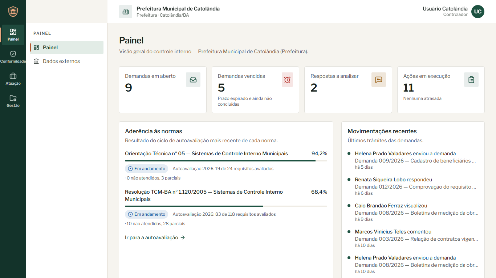
| Quadro | O que mostra e o que fazer |
|---|---|
| Demandas em aberto | Total de demandas ainda não concluídas nem canceladas. |
| Demandas vencidas | Prazo expirado e ainda não concluídas. Deve ser zero ou perto disso: cobre as unidades (capítulo 5). |
| Respostas a analisar | Demandas respondidas pelas unidades que aguardam a sua análise. Analise em até poucos dias para não travar o fluxo. |
| Ações em execução | Ações dos planos 5W2H em andamento; o subtítulo avisa quantas estão atrasadas. |
| Aderência às normas | Percentual de conformidade do ciclo de autoavaliação mais recente de cada norma, com quantos requisitos foram avaliados e quantos estão “não atendidos” ou “parciais”. O link Ir para a autoavaliação leva ao ciclo. |
| Movimentações recentes | Últimos trâmites das demandas (quem enviou, respondeu, visualizou, comentou). |
| Planos de ação | Situação das ações de todos os planos: abertas, vencidas, aguardando validação e concluídas. |
| Unidades | Secretarias e setores cadastrados, com atalho para Gerenciar unidades. |
Clique no círculo com suas iniciais (canto superior direito) para abrir o menu com Configurações, Aparência do sistema (só controlador) e Sair.
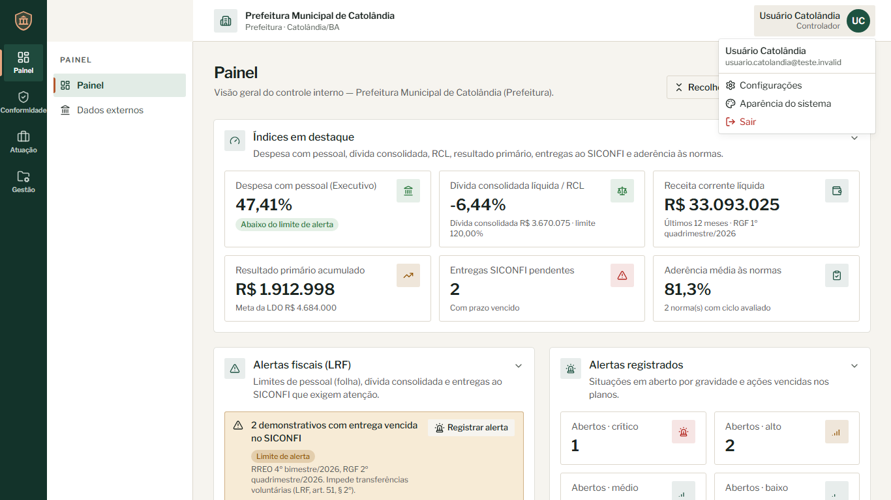
Se você controla mais de uma entidade, o nome da entidade no topo vira um botão. Clique nele e escolha a outra entidade em Trocar entidade. Todas as telas passam a mostrar os dados da entidade escolhida.
Antes de enviar uma demanda ou registrar algo, confira no topo da tela em qual entidade você está. Um registro feito na Câmara não aparece na Prefeitura.
Sempre clique em Sair ao terminar, principalmente em computadores compartilhados.
A estrutura organizacional da entidade: quem recebe demandas e responde por ações.
Cadastrar secretarias, departamentos, divisões e setores, com responsável e e-mail. É a base para enviar demandas, atribuir ações e definir o que cada servidor de acesso restrito pode ver.
Na implantação (antes de tudo) e sempre que a estrutura mudar: nova secretaria, troca de secretário, fusão de setores.
Caminho: Gestão → Unidades. O quadro Nova unidade aparece à direita apenas para o perfil Controlador.
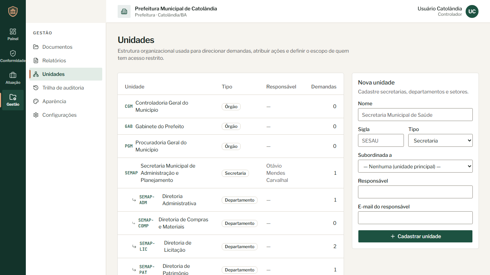
Solicitações formais da controladoria às unidades, com prazo, resposta, anexos e histórico completo.
Substituir ofícios e e-mails soltos: pedir documentos e informações às secretarias, controlar prazos, receber respostas com anexos e guardar tudo com histórico permanente.
| Situação | Significado | Quem age agora |
|---|---|---|
| Enviada | A demanda foi criada e a unidade recebeu e-mail de aviso. | Unidade (abrir e responder) |
| Visualizada | Alguém da unidade abriu a demanda. Prova de ciência. | Unidade (responder) |
| A unidade enviou a resposta, com ou sem anexos. | Controladoria (analisar) | |
| A controladoria clicou em Iniciar análise da resposta; sinaliza à unidade que a resposta está sendo examinada. | Controladoria (aceitar ou devolver) | |
| Devolvida | A resposta foi considerada insuficiente; a unidade recebe as orientações e, se informado, um novo prazo. | Unidade (complementar) |
| Concluída | Resposta aceita. Encerra a demanda; ainda é possível comentar. | Ninguém |
| Cancelada | A demanda deixou de exigir resposta (com motivo registrado). Não pode ser desfeito. | Ninguém |
Além da situação, a demanda é marcada como vencida quando o prazo passa e ela ainda não foi concluída — isso alimenta o quadro Demandas vencidas do Painel e o filtro Só vencidas.
Caminho: Atuação → Demandas → Nova demanda.
001/2026 e a unidade é avisada por e-mail.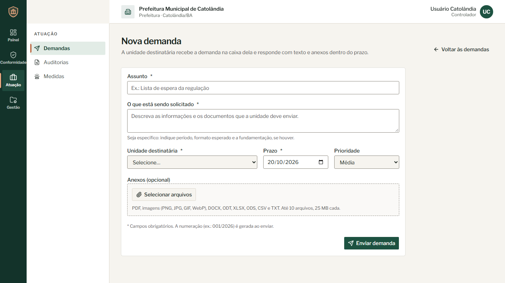
Você também pode criar demandas já ligadas a uma origem, e o formulário vem preenchido com orientações para a unidade:
Quando a resposta dessas demandas é aceita, os documentos enviados pela unidade viram evidência do requisito ou da ação de origem, automaticamente.
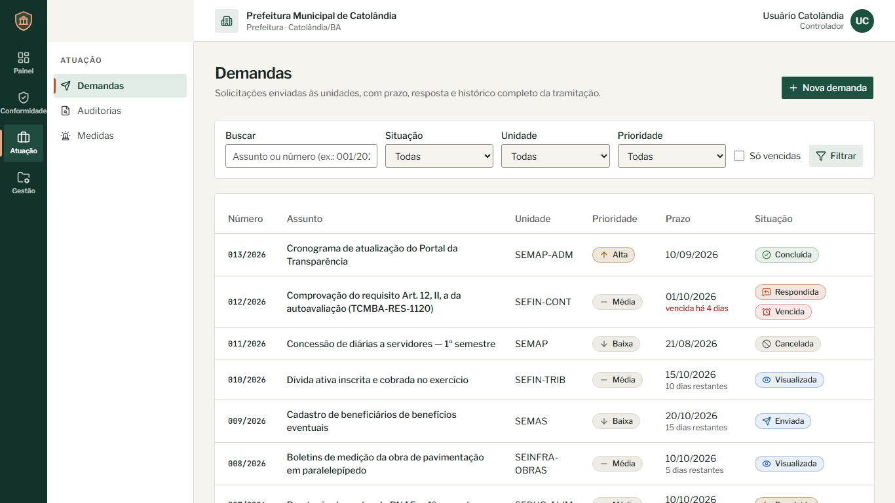
Use a busca por assunto ou número (ex.: 001/2026) e os filtros Situação (Todas, Em aberto ou uma situação específica), Unidade, Prioridade e Só vencidas. Clique em Filtrar para aplicar e em Limpar para voltar à lista completa.
Abra a demanda clicando no número ou no assunto. A tela mostra os dados da solicitação, a Tramitação (histórico permanente) e, à direita, as Ações da controladoria.
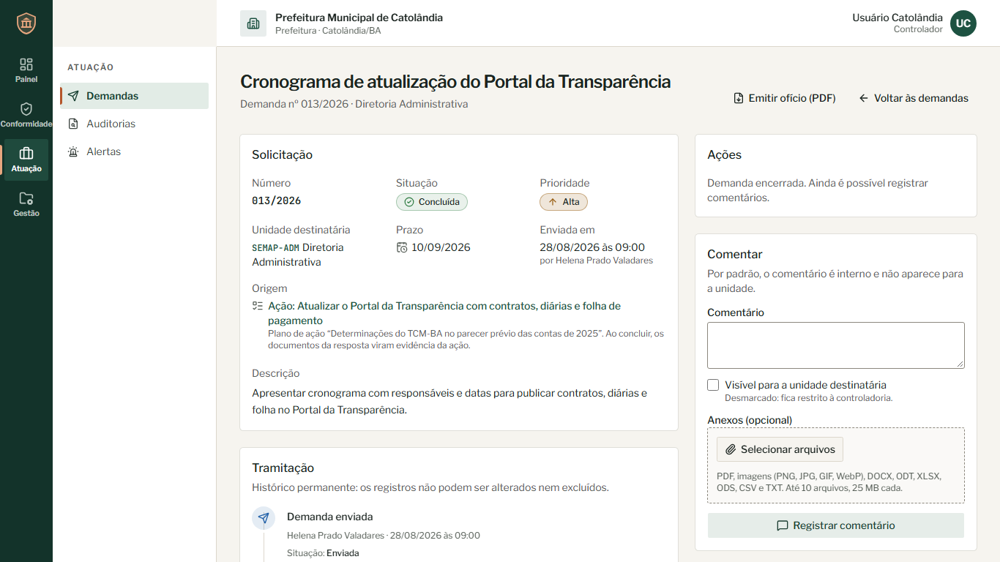
Enquanto a demanda aguarda resposta, a unidade pode pedir mais prazo, com justificativa. O pedido aparece na demanda como Pedido de prorrogação e você recebe e-mail. Até a decisão, vale o prazo atual.
| Quando | Quem recebe e-mail |
|---|---|
| Nova demanda enviada | A unidade destinatária |
| Demanda respondida | A controladoria |
| Devolvida para complementação | A unidade |
| Pedido de prorrogação | A controladoria |
| Prorrogação deferida ou indeferida | A unidade |
| Demanda concluída | A unidade |
| Lembrete automático diário | As unidades recebem aviso das demandas que vencem em 3 dias e em 1 dia; a controladoria recebe um resumo das demandas abertas já vencidas. |
Conhecer a tela da secretaria ajuda a orientar os servidores e a tirar dúvidas por telefone.
O servidor com perfil Acesso restrito entra pelo mesmo link do município e cai direto em Minhas demandas. Ele só tem dois itens no menu: Minhas demandas e Painel da unidade. Não vê nada de outras unidades nem dos demais módulos.
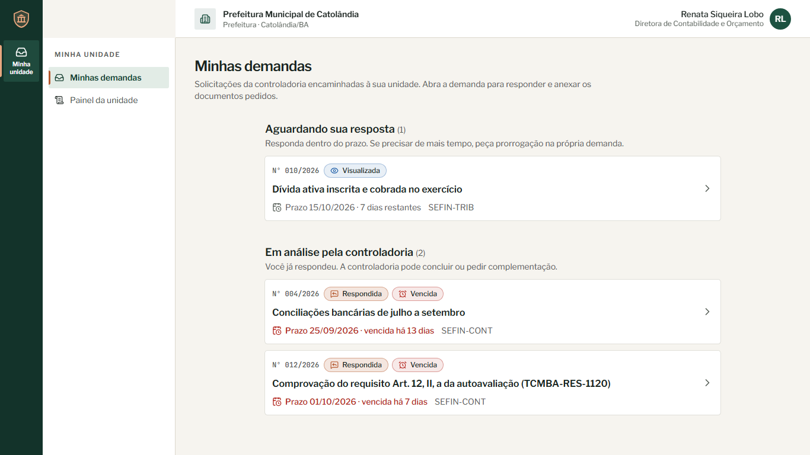
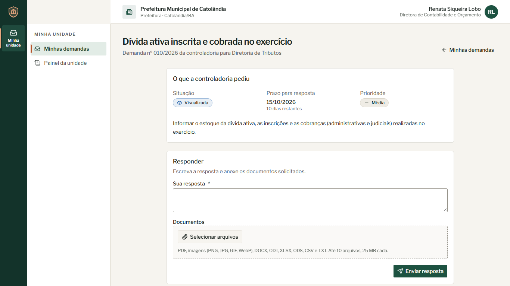
Mostra à secretaria os números dela: Em aberto, A vencer em 7 dias, Vencidas, Respondidas e Concluídas, além da lista de prazos da mais urgente para a menos urgente.
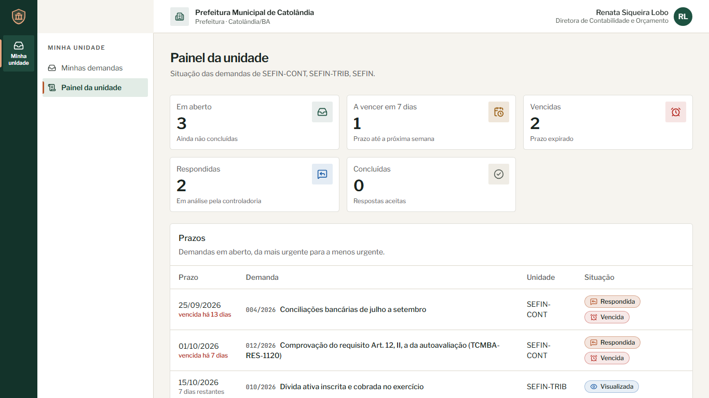
Envie aos servidores um resumo de três linhas: (1) entre pelo link do município; (2) abra a demanda em “Aguardando sua resposta”, escreva e anexe; (3) se não der tempo, peça prorrogação na própria demanda antes do vencimento.
Verificar, requisito por requisito, se o sistema de controle interno atende às normas — e medir a evolução de um ano para o outro.
Avaliar a estrutura e o funcionamento do controle interno frente aos catálogos de requisitos já carregados no sistema, calcular o percentual de conformidade e transformar as lacunas em plano de ação.
Ao menos uma vez por ano (um ciclo por exercício), e sempre que quiser medir o efeito das ações corretivas. O resultado alimenta o Relatório Anual e o Painel.
O sistema traz dois catálogos prontos: a Orientação Técnica nº 05/2024 da Rede de Controle da Gestão Pública no Estado da Bahia, que organiza o controle interno nas macrofunções de controladoria, auditoria interna, corregedoria e ouvidoria; e a Resolução TCM-BA nº 1.120/2005, que dispõe sobre o sistema de controle interno municipal. Os catálogos são mantidos pela HorizonAJ.
Em Conformidade → Normas estão os catálogos. Ver requisitos mostra todos os itens da norma organizados por capítulo, com a indicação de quais são avaliáveis, e o link para o Texto oficial.
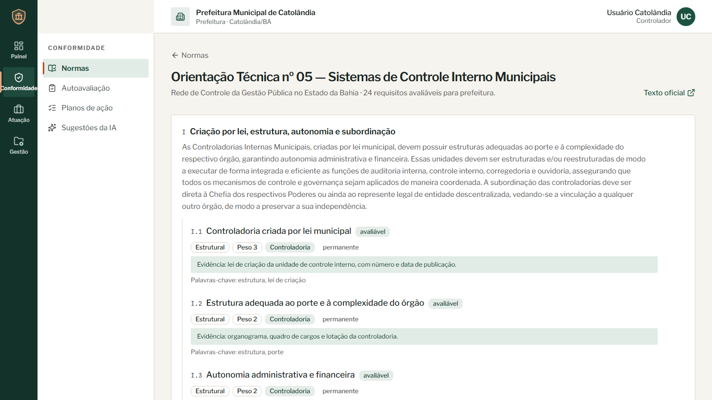
Só entram no ciclo os requisitos avaliáveis que se aplicam ao tipo da sua entidade (por exemplo, itens exclusivos de Câmara não aparecem para a Prefeitura).
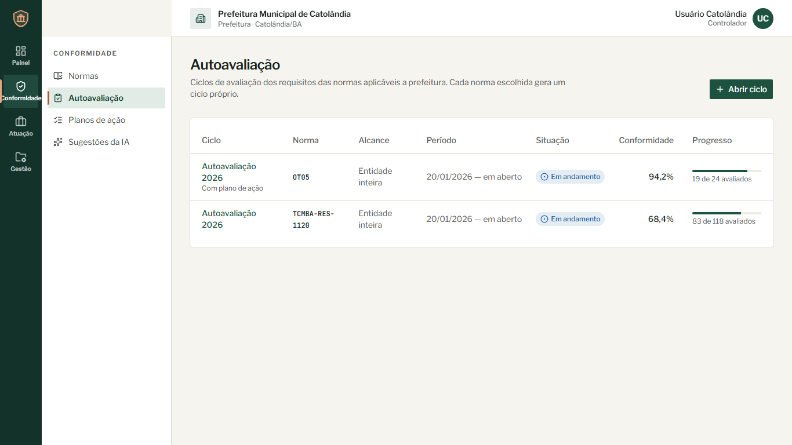
Abra o ciclo. No topo, o Resumo do ciclo mostra a conformidade geral, o progresso e as respostas por situação. Abaixo há quatro abas: Requisitos, Resultado por capítulo, Por macrofunção e Evolução.
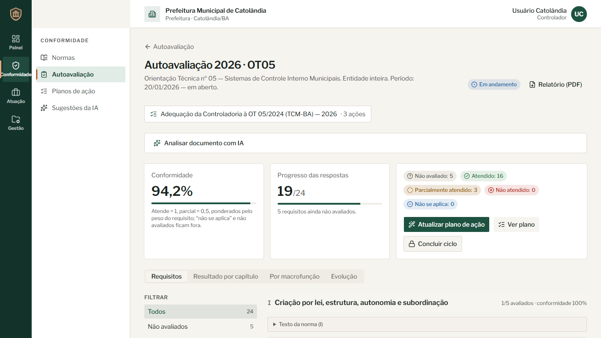
Na aba Requisitos, cada requisito aparece em um cartão com o código, o texto, a classificação (tipo, peso e macrofunções) e o quadro Evidências esperadas e orientação. Para responder:
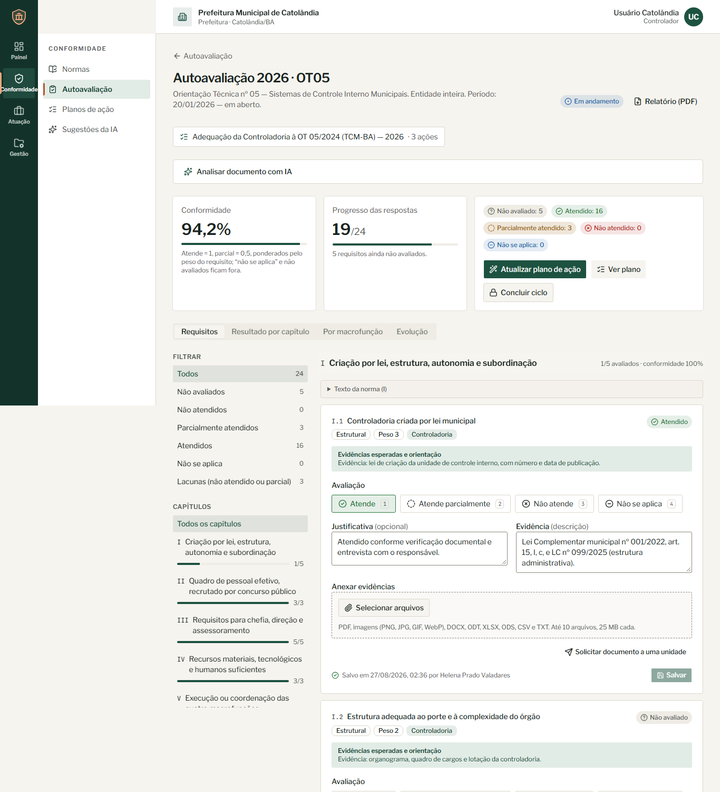
Cada resposta vale pontos, multiplicados pelo peso do requisito (padrão 1; requisitos mais importantes têm peso maior):
| Avaliação | Pontos | Entra no cálculo? |
|---|---|---|
| Atende | 1 | Sim |
| Atende parcialmente | 0,5 | Sim |
| Não atende | 0 | Sim |
| Não se aplica | — | Não (sai do cálculo) |
| Não avaliado | — | Não (ainda pendente) |
Conformidade = soma dos (pontos × peso) ÷ soma dos pesos avaliados. Exemplo: três requisitos de peso 1 — um “Atende” (1), um “Parcial” (0,5) e um “Não atende” (0) — dão 1,5 ÷ 3 = 50%. O mesmo cálculo é feito por capítulo da norma e por macrofunção (um requisito ligado a duas macrofunções conta, com peso inteiro, nas duas).
Como ele sai do cálculo, usar “Não se aplica” sem motivo real infla o percentual. Justifique sempre com clareza — o TCM-BA e auditores externos podem questionar.
Um só lugar para acompanhar todas as providências: da autoavaliação, de auditorias, de medidas e de determinações do Tribunal de Contas.
Organizar o que precisa ser feito, por quem, até quando e como, acompanhar a execução e validar a conclusão com evidências.
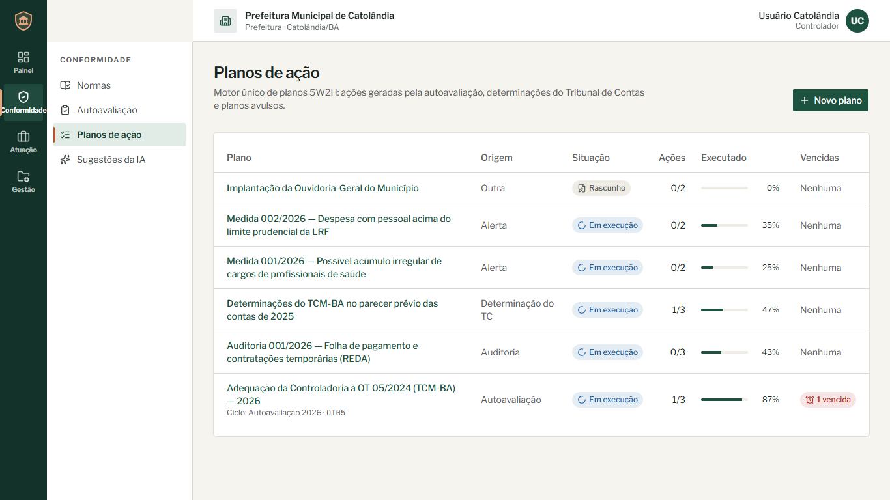
Planos da autoavaliação, de auditorias e de medidas são criados a partir desses módulos. Para uma determinação do Tribunal de Contas ou outra necessidade:
Dentro do plano, clique em Nova ação (ou em Editar numa ação existente) e preencha:
| Campo | O que escrever |
|---|---|
| O quê | A providência, começando por um verbo. Ex.: “Elaborar e publicar o regimento interno da controladoria”. |
| Por quê | O motivo (o requisito não atendido, o achado, a determinação). |
| Onde | O local ou processo envolvido. |
| Quem / Responsável / Unidade responsável | A pessoa e a unidade que executam. |
| Quando (prazo) | Data limite. Ações sem prazo não aparecem como vencidas. |
| Como | As etapas ou o método. |
| Quanto (custo estimado, R$) | Se houver custo. Ex.: 1.500,00. |
| Prioridade, Status, Execução (%) | Acompanhamento da ação (veja os status abaixo). |
Clique em Adicionar ação (nova) ou Salvar ação (edição). Depois de salva, a ação ganha a seção Marcos (etapas com prazo — use Novo marco), as Evidências e o botão Enviar como demanda, que pede a execução ou a comprovação à unidade.
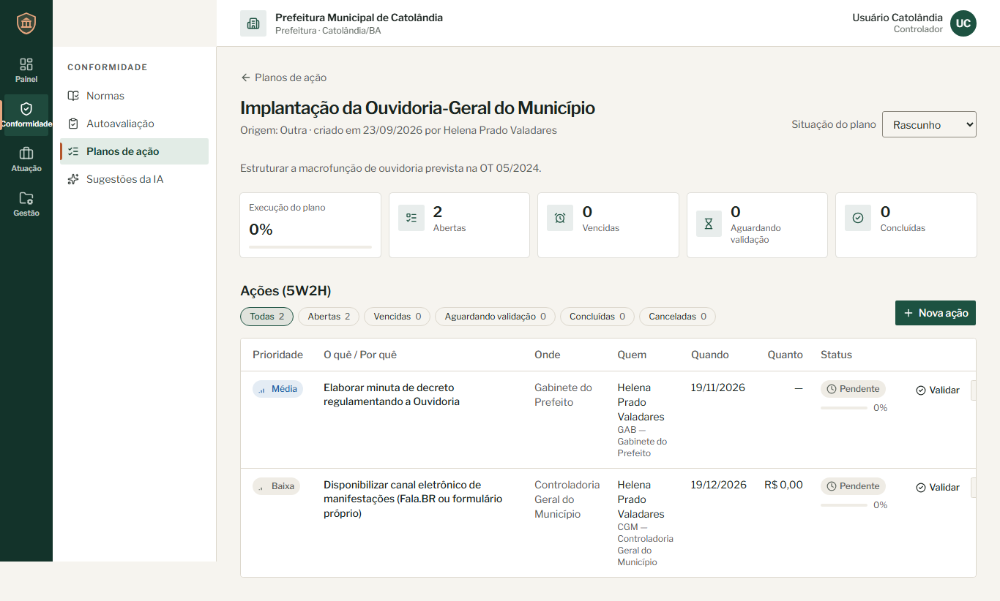
| Status | Significado |
|---|---|
| Pendente | Ainda não começou. |
| Em andamento | Em execução; atualize a Execução (%). |
| A equipe considera a ação feita (a execução vai a 100%) e pede a validação do controlador. | |
| Concluída | Somente o controlador atribui, ao validar a ação. |
| Cancelada | A ação não será executada. |
O controlador também altera a Situação do plano no topo da tela: Rascunho Em execução Concluído Cancelado. Em plano encerrado não se acrescentam ações.
Do Plano Anual de Auditoria Interna (PAAI) ao monitoramento das recomendações, com papéis de trabalho organizados.
Planejar as auditorias do ano por risco, registrar a matriz de planejamento, aplicar checklists, pedir documentos às unidades, registrar achados e recomendações e acompanhar a correção.
No início do exercício (PAAI) e durante todo o ano. Auditorias fora do plano (especiais ou não previstas) também podem ser registradas.
Caminho: Atuação → Auditorias → Plano anual (PAAI).
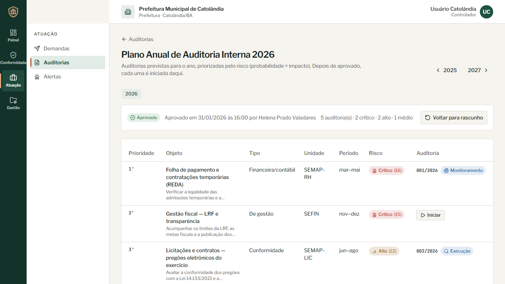
Para uma auditoria fora do plano, use Nova auditoria na lista de auditorias e preencha título, tipo, alcance, objetivo, escopo, critérios e normas, período previsto e a Equipe de auditoria (só usuários da controladoria). Confirme em Registrar auditoria.
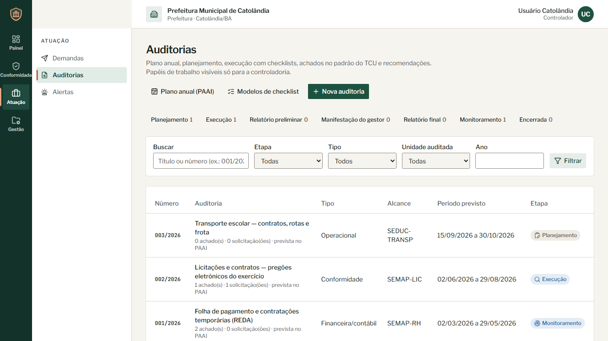
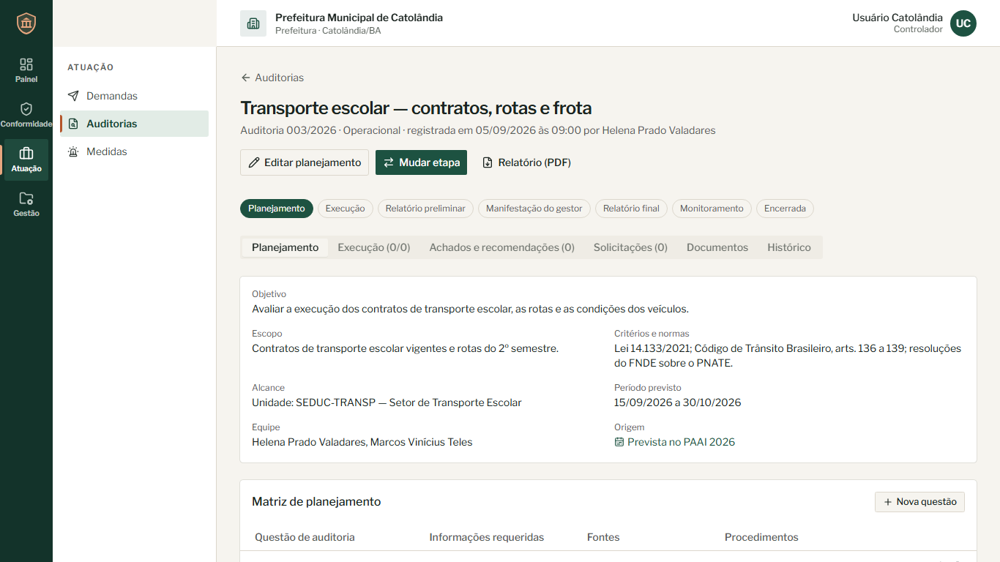
| Aba | O que fazer |
|---|---|
| Planejamento | Objetivo, escopo, critérios, equipe e a Matriz de planejamento: em Nova questão, registre cada Questão de auditoria com Informações requeridas, Fontes de informação e Procedimentos (exame documental, entrevista, inspeção, amostragem…). |
| Execução | Aplicar modelo de checklist e avalie cada item como Conforme Não conforme Não se aplica, com observação (o que foi verificado, amostra, ressalvas) e evidências. |
| Achados e recomendações | Registre cada achado e suas recomendações (veja 9.4). |
| Solicitações | Nova solicitação cria uma demanda à unidade auditada. A unidade vê só a solicitação, nunca os papéis de trabalho. |
| Documentos | Papéis de trabalho: evidências dos checklists e dos achados, visíveis só para a controladoria. |
| Histórico | Registros permanentes de tudo o que foi feito na auditoria. |
Para avançar de etapa, use Mudar etapa. Para iniciar a execução, a auditoria precisa ter equipe definida. Voltar de etapa exige observação; cancelar exige justificativa; encerrar e cancelar são exclusivos do controlador.
Clique em Novo achado. O sistema segue o padrão do TCU, com quatro elementos obrigatórios:
| Elemento | Pergunta que responde |
|---|---|
| Condição | O que foi encontrado? (a situação de fato, com dados e evidências) |
| Critério | O que deveria ser? (lei, norma, contrato ou boa prática) |
| Causa | Por que a condição ocorreu? (falha de controle, de processo, de pessoal…) |
| Efeito | Qual a consequência real ou potencial? (dano, risco, prejuízo ao serviço) |
Informe também a Gravidade (probabilidade × impacto), o Item de checklist relacionado (se houver) e as evidências. Em seguida, em Nova recomendação, escreva o que a unidade deve fazer para corrigir a causa, a Unidade responsável e o Prazo sugerido.
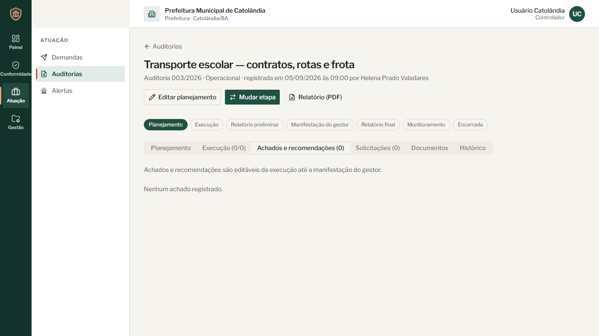
Monitoramento: em cada recomendação, Gerar ação cria a ação 5W2H correspondente no plano de ação da auditoria. A partir daí, o acompanhamento é feito no capítulo 8 (status, marcos, envio como demanda e validação).
Achados e recomendações podem ser editados da execução até a manifestação do gestor. Recomendação que já virou ação não pode ser excluída — ajuste a ação no plano.
Em Modelos de checklist ficam roteiros reutilizáveis. Criar modelos-base cria três modelos prontos (licitação, contrato e folha). Você pode criar os seus com Novo modelo e incluir itens com Item a verificar e Orientação ou base legal. Ao aplicar um modelo a uma auditoria, os itens são copiados; mudanças posteriores no modelo não alteram auditorias já em andamento.
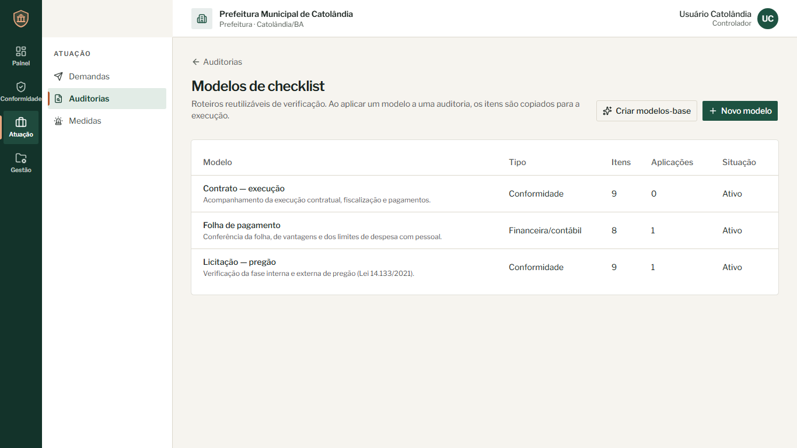
Situações que exigem intervenção da controladoria, fora da conformidade normativa, classificadas por gravidade e tratadas com plano de ação.
Registrar e tratar irregularidades e riscos concretos: uma constatação em campo, uma denúncia, um alerta fiscal, uma análise da IA ou uma demanda externa (Ministério Público, Tribunal, Câmara).
Sempre que surgir um fato que precise de providência e acompanhamento até a solução — por exemplo, pagamentos sem liquidação ou despesa com pessoal acima do limite de alerta.
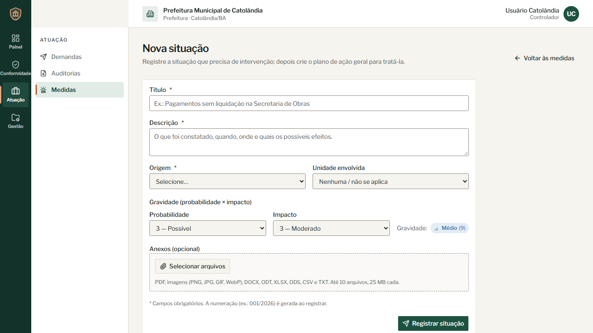
Probabilidade: 1 Rara · 2 Improvável · 3 Possível · 4 Provável · 5 Quase certa.
Impacto: 1 Insignificante · 2 Menor · 3 Moderado · 4 Maior · 5 Catastrófico.
A pontuação é a multiplicação dos dois (de 1 a 25):
A mesma escala é usada para priorizar o PAAI e classificar achados de auditoria.
| P \ I | 1 | 2 | 3 | 4 | 5 |
|---|---|---|---|---|---|
| 5 | 5 | 10 | 15 | 20 | 25 |
| 4 | 4 | 8 | 12 | 16 | 20 |
| 3 | 3 | 6 | 9 | 12 | 15 |
| 2 | 2 | 4 | 6 | 8 | 10 |
| 1 | 1 | 2 | 3 | 4 | 5 |
A tela Medidas mostra o Painel de medidas com a matriz das situações em aberto e a lista com filtros por situação, gravidade, origem e unidade. Painel (PDF) emite o relatório.
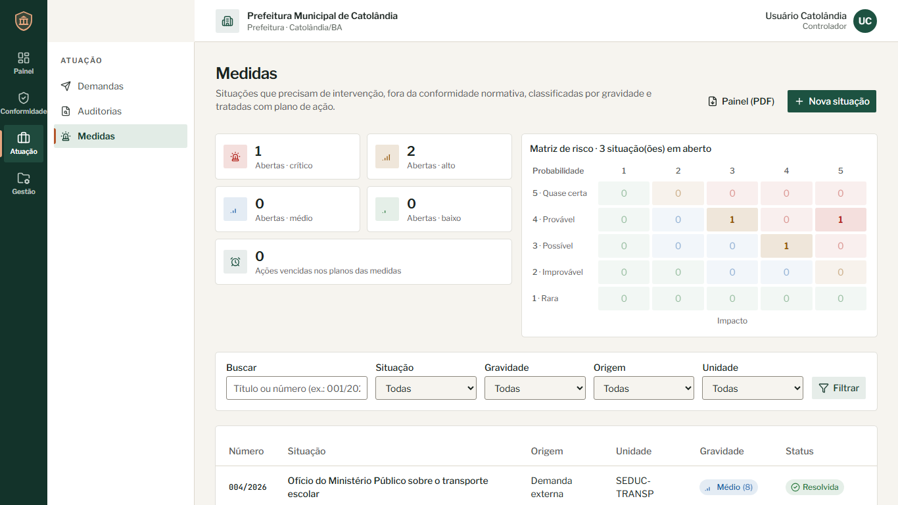
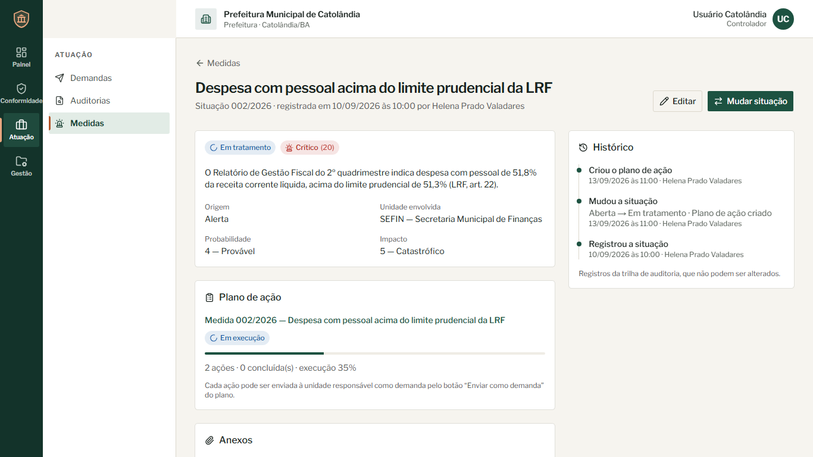
| Situação | Significado |
|---|---|
| Aberta | Registrada, ainda sem tratamento iniciado. |
| Providências em curso (normalmente com plano de ação). | |
| Resolvida | Encerrada com solução; justificativa registrada. |
| Arquivada | Encerrada sem providência (improcedente, perda de objeto); justificativa registrada. |
Na tela Dados externos, o botão Registrar medida cria uma situação já preenchida quando a despesa com pessoal passa do limite de alerta ou há entregas pendentes ao SICONFI.
Todos os arquivos da entidade em um só lugar e uma inteligência artificial que ajuda a ler documentos — sempre com a palavra final do controlador.
Em Gestão → Documentos aparecem todos os arquivos enviados no sistema, com a origem: Demanda, Requisito (autoavaliação), Ação de plano, Medida ou Avulso. Busque pelo nome e filtre por origem e unidade; Baixar faz o download (registrado na trilha).
O quadro Envio avulso serve para arquivos sem vínculo com demanda, requisito ou ação — normas internas, atos de nomeação, regimentos. Selecione os Arquivos e clique em Enviar.
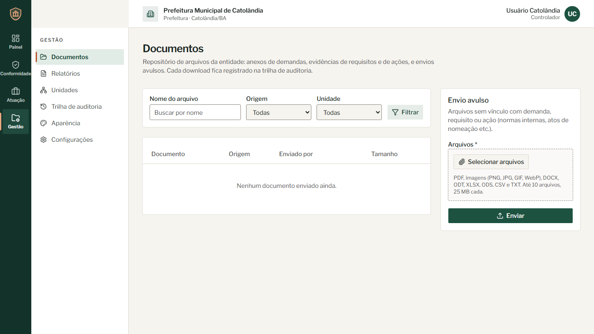
A IA é uma assistente de leitura. Ela não decide nada sozinha: tudo o que ela produz fica como sugestão pendente até você aceitar, editar ou rejeitar. Há duas análises:
| Análise | Onde iniciar | Resultado |
|---|---|---|
| Documento × norma (comparar com a norma) | No detalhe de um documento (Comparar com a norma → Analisar com IA) ou no ciclo (Analisar documento com IA) | Sugere a resposta de cada requisito do ciclo, citando o trecho e a página do documento. |
| Avaliação de evidência | No cartão do requisito ou no documento anexado a ele (Avaliar evidência com IA) | Diz se os anexos comprovam, comprovam em parte ou não comprovam o requisito, e o que falta comprovar. |
Antes do envio, dados pessoais (CPF, RG, e-mail, telefone, cartão SUS, nomes rotulados) são mascarados.
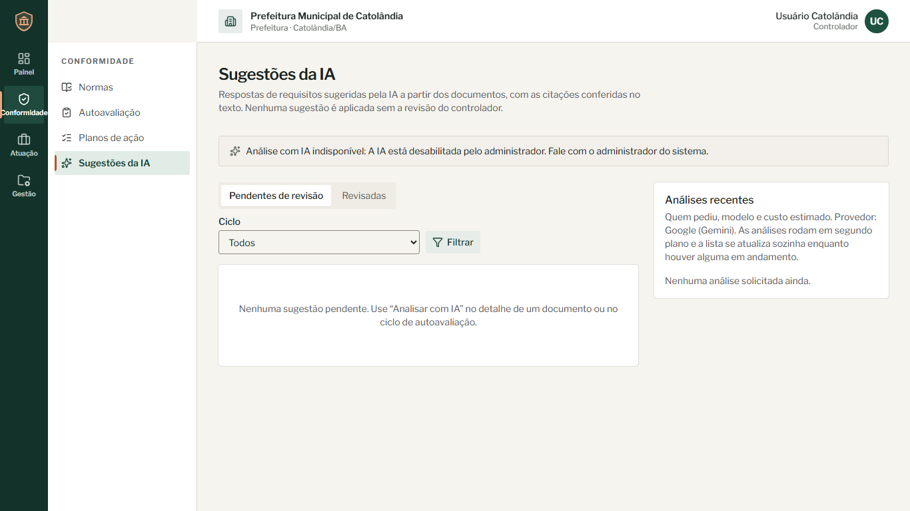
Relatórios prontos, com o nome e o brasão da entidade. Cada emissão fica registrada na trilha de auditoria.
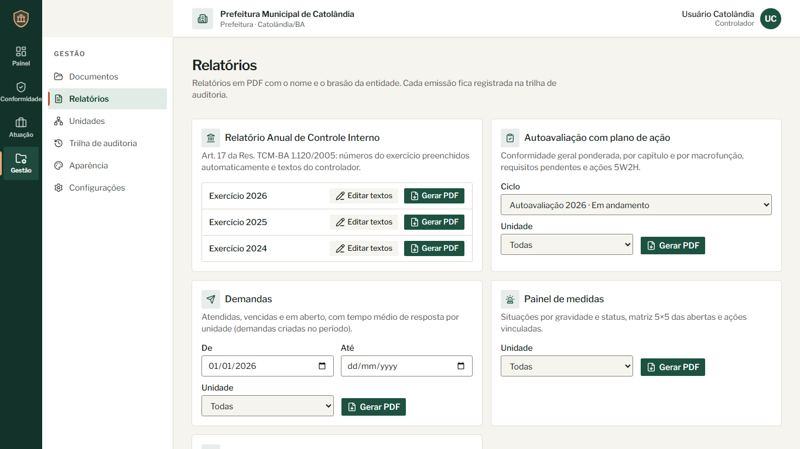
| Relatório | Conteúdo | Opções |
|---|---|---|
| Relatório Anual de Controle Interno | Números do exercício preenchidos automaticamente e os textos do controlador. O próprio sistema o associa ao art. 17 da Res. TCM-BA 1.120/2005. | Exercício · Editar textos · Gerar PDF |
| Autoavaliação com plano de ação | Conformidade geral ponderada, por capítulo e por macrofunção, requisitos pendentes e ações 5W2H. | Ciclo |
| Demandas | Atendidas, vencidas e em aberto, com tempo médio de resposta por unidade (demandas criadas no período). | Unidade · período |
| Painel de medidas | Situações por gravidade e status, matriz 5×5 das abertas e ações vinculadas. | — |
| Relatório de auditoria | Dados, escopo, critérios, matriz de planejamento, achados (condição, critério, causa e efeito) e recomendações. | Auditoria · versão Preliminar ou Final |
| Ofício de demanda | Ofício formal de uma demanda específica. | No detalhe da demanda: Emitir ofício (PDF) |
Comece a escrever os textos do relatório anual ao longo do ano (por exemplo, a cada quadrimestre). No fim do exercício, basta revisar e gerar o PDF.
Indicadores do município coletados automaticamente de fontes oficiais, para acompanhar os limites da LRF sem planilhas.
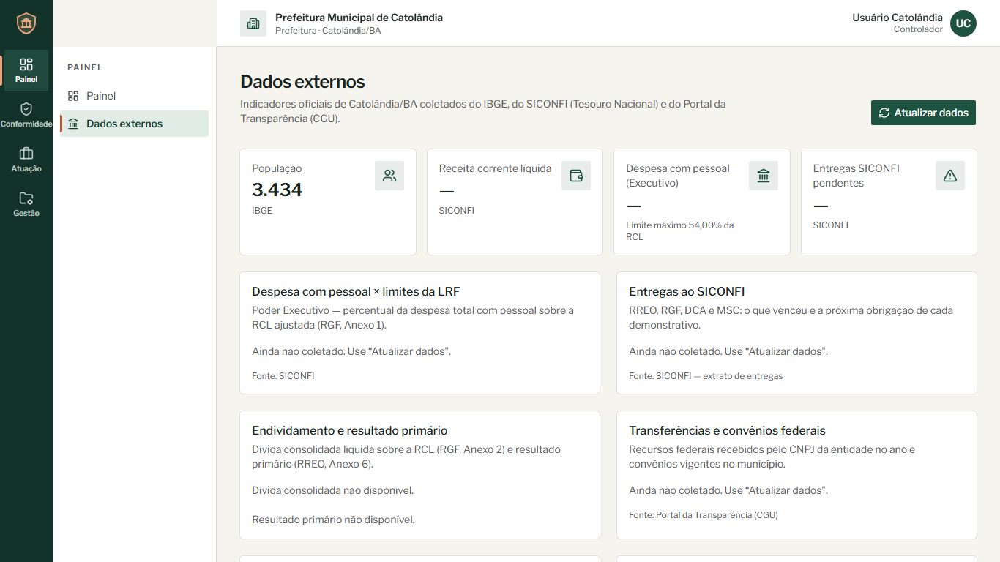
| Quadro | O que mostra | Fonte |
|---|---|---|
| Indicadores | População, receita corrente líquida (RCL), entregas pendentes ao SICONFI e DCL/RCL. | IBGE, SICONFI |
| Despesa com pessoal × limites da LRF | Despesa total com pessoal sobre a RCL ajustada, com barras de limite de alerta, prudencial e máximo, e o selo da faixa. | SICONFI (RGF) |
| Entregas ao SICONFI | Cada demonstrativo, período, prazo e situação (Entregue, Pendente, A vencer). | SICONFI |
| Endividamento e resultado primário | Dívida consolidada líquida sobre a RCL (RGF, Anexo 2) e resultado primário (RREO, Anexo 6) comparado à meta da LDO. | SICONFI |
| Transferências e convênios federais | Recursos federais recebidos pelo CNPJ da entidade no ano e convênios vigentes no município. | Portal da Transparência (CGU) |
| Empresas sancionadas (CEIS/CNEP) | Consulta pelo CNPJ do fornecedor antes de contratar ou pagar. Cada consulta fica na trilha. | Portal da Transparência (CGU) |
| TCM-BA | Links para os serviços do Tribunal (abrem em nova aba). O sistema não coleta dados do TCM-BA. | — |
| Fontes e coletas | Situação da última sincronização de cada fonte. | — |
As integrações usam o código IBGE do município. Se aparecer “Código IBGE não cadastrado”, peça à HorizonAJ para preenchê-lo. Os números vêm das declarações enviadas pelo próprio município ao SICONFI: se estiverem errados ou ausentes, o problema está na origem (contabilidade), não no sistema.
O histórico permanente da entidade e os ajustes da sua conta.
Em Gestão → Trilha de auditoria está o registro permanente das operações realizadas na entidade: Data e hora, Usuário, Operação e Detalhes. A tela mostra os 200 registros mais recentes e traz o selo Somente inclusão: os registros não podem ser alterados nem excluídos por ninguém.
Exemplos de operações registradas: acessou a entidade, cadastrou unidade, criou/respondeu/concluiu/devolveu/cancelou demanda, pediu/deferiu/indeferiu prorrogação, enviou lembretes de prazo, registrou/editou/encerrou situação, enviou ou baixou documento, emitiu relatório em PDF, emitiu ofício.
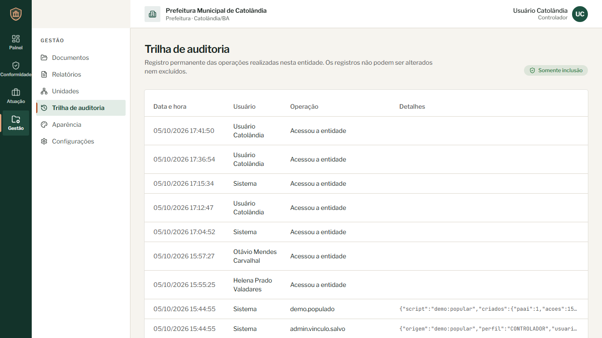
Menu do usuário → Configurações. Há três seções:
A seção Inteligência artificial apenas informa se a IA está habilitada; a configuração é feita pela HorizonAJ.
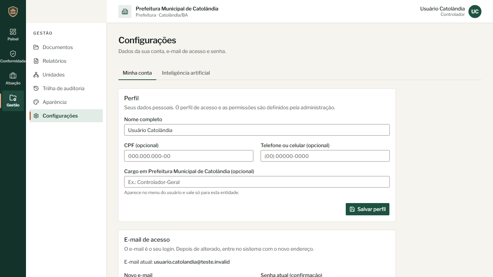
Em Gestão → Aparência, o controlador escolhe a identidade visual (cores) usada por todos os usuários da entidade e confirma em Aplicar à entidade. É apenas estética: não muda dados nem permissões.
Uma agenda prática para manter o controle interno em dia sem sobrecarga.
| Quando | O que fazer no sistema |
|---|---|
| Todo dia 10 a 15 min |
|
| Toda semana |
|
| Todo mês |
|
| A cada quadrimestre |
|
| Todo ano |
|
Respostas rápidas para as dúvidas mais comuns.
O sistema não tem recuperação automática de senha. Peça ao suporte da HorizonAJ a redefinição. Ao entrar com a senha provisória, troque-a em Configurações → Alterar senha. Se aparecer “Muitas tentativas”, aguarde alguns minutos antes de tentar de novo.
A demanda continua aberta e passa a contar como vencida; a unidade ainda pode responder. Você pode: cobrar com um comentário visível para a unidade; emitir o ofício em PDF; deferir uma prorrogação, se a unidade pedir; ou, se a resposta veio incompleta, devolver com novo prazo. Demandas vencidas aparecem no relatório de Demandas, o que ajuda a documentar a falta de colaboração.
A trilha de auditoria é permanente: nada é apagado. A correção é sempre um novo registro:
Não. Comentários só aparecem para a unidade se você marcar Visível para a unidade destinatária. Na auditoria, a unidade vê apenas as solicitações enviadas a ela.
Somente o perfil Controlador. A equipe de controle vê a situação, mas não a identidade do denunciante.
Use o botão com o nome da entidade no topo da tela e escolha a outra em Trocar entidade. Os dados nunca se misturam.
Peça que verifiquem a caixa de spam e confirmem o e-mail cadastrado. Lembre que o aviso é um apoio: a demanda está sempre disponível em Minhas demandas. Persistindo o problema, acione o suporte.
Use-a como ponto de partida. Confira as citações no documento antes de aceitar. Nada é aplicado sem a sua revisão, e a responsabilidade pela avaliação é do controlador.
Os catálogos de normas são mantidos pela HorizonAJ. Envie a sugestão ao suporte.
Envie ao suporte da HorizonAJ: nome, e-mail, cargo, entidade, perfil (Controlador, Equipe de controle ou Acesso restrito) e, para acesso restrito, a unidade.
Os termos usados no sistema, em poucas palavras.
A quem pedir ajuda e como agilizar o atendimento.
O suporte do Sistema de Controladoria Municipal é prestado pela HorizonAJ, pelos canais informados no contrato e na implantação. Procure o suporte para:
A HorizonAJ nunca pede a sua senha. Não compartilhe sua conta: cada pessoa deve ter o próprio acesso, porque tudo o que é feito fica registrado em seu nome na trilha de auditoria.
HorizonAJ · Sistema de Controladoria Municipal · Manual do Controlador · versão 1.0 · outubro de 2026